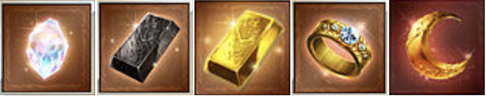
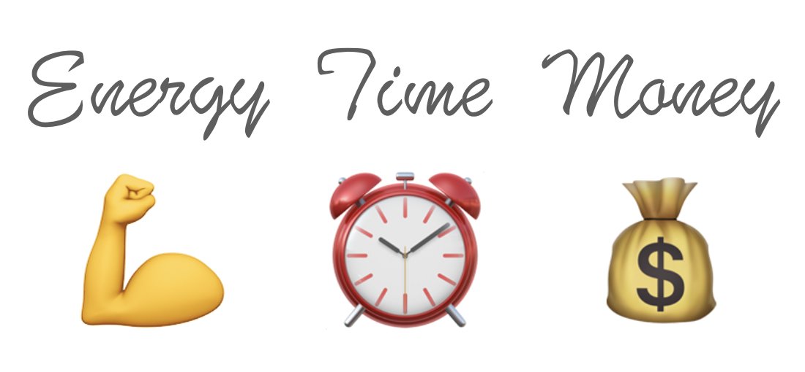

グラブルで遊ぶ時に意識していること
はじめに
この記事では3年間グラブルで遊んでみて、感じたことを書いています
記事の内容はグラブルで遊ぶ時に意識していることになります
目次
リソースの使い所
読み飛ばしたい方は👉（マルチの需給）
1つ目は持っているリソースをどのタイミングで使うかです
リソースはグラブルの場合は、金剛。ダマ、ヒヒ、久遠、金月などですね
他にも宝晶石や半汁なんかもリソースに含めても良いかもしれません
あらゆるものが無限にあれば、こんなことは考えなくても良いのですが、アイテムや時間は有限です
だから優先順位をつけるべきだと感じました
グラブルに何を求めるか？

まず前提としてあなたはグラブルに何を求めていますか？
高難度？ 古戦場？ それとも推しキャラを眺める？
それによって目的やそれを実現する方法も異なります
まずは自分の目的を明確化し、そして同じような目的を持つ人を見つけて進めていくと満足度が高くなると思います
私がグラブルで最も重要視するのは楽しさです
できる限り強くなりたいとも思いますが、それは楽しさありきだと考えています
（強いから楽しくなるとも言えるので、バランスも大事ですが）
何かを決めるときは自分で判断することで、納得感を持ってゲームをすることができると思います
納得することができれば、グラブルを楽しむこともできますし、それが継続や戦力強化にも繋がると感じています
マルチの需給
読み飛ばしたい方は👉（おまけ）
2つ目は、マルチの需給です
（救援側：需要、自発側：供給）
グラブルのマルチバトルは人気コンテンツとそうではないコンテンツがあります
人気があれば救援を出すとすぐに討伐されるのですが、不人気のマルチバトルは誰も救援に入らないなんてこともあります
初心者の頃にこの事について知っていれば、時間を必要以上に使わずに効率的に進めていくことができたなぁと感じました
できるだけ救援して欲しい時に意識すること
- Twitter救援
- 参戦者の救援依頼
- 敵のHP
- 自分より強い人に頼る
Twitter救援
グラブルの救援は2種類あります
一つはグラブル内の救援欄に表示させる方法です
こちらはデフォルトで救援できるので簡単なのが良いところです
しかし、救援欄に表示されるマルチはランダムなので、自発者と参戦者の需給がマッチするとは限りません
どうしても救援に来て欲しい場合は、次のTwitter救援がおすすめです
もう一つはTwitter救援です
グラブルとTwitterアカウントを紐づけることで救援ツイートを投稿することができます
ある程度グラブルで遊んでいる方であれば、Twitterから救援に入ることも多いと思われます
救援欄とは異なり、目的のマルチに入ることができるのがTwitter救援の良いところです
デメリットを挙げるとすれば、ライバルが多いところですかね
マルチによりますが、入るまでも競争、入ってからも貢献度の競争なんてものもあります
初回の紐付けだけ面倒かもしれませんが、メリットが大きいのでまだ設定されていない方にはお勧めです
できるだけ救援して欲しい時は、救援欄とTwitter救援の両方しておくのが良いと思います
参戦者の救援依頼
設定 > バトル設定 > 参戦者の救援依頼で設定できます
「救援依頼を許可する」にチェックが入っていないと、参戦者は救援できません
できるだけ救援して欲しいなら、チェックを入れておく方が良いですね
敵のHP
敵のHPの量によって救援に入るかどうか判断する場合があります
（この項目は、私の主観もあるので一概には言えません）
HPが多い方が良いか、少ない方が良いかは、報酬や救援側の状況によると思います
例えば、青箱狙いなら貢献度が大事なので、HPがある程度残っていると救援を期待できます
逆にHPが少ない方がいいのは、金箱報酬などが目当ての場合だと思われます
もしくは、BPが溢れているので消費したい場合なども考えられます
自分より強い人に頼る
これが最も強力かもしれません
知り合いや所属している騎空団の団員に頼るのがおすすめです
誰かと仲良くなれば、あまり人気の無いマルチでもスムーズに討伐してもらえるでしょう！
自分より強い人が助けてくれた時のHPの削られ方には圧倒されると思います
知り合いもいないし、団にも所属していない場合は掲示板やTwitterなどで探すのもおすすめです
話は脱線しますが、グラブルを効率良く進めるなら団には所属しておいた方がいいですよ
ソロ団でも一応やっていけますけどね（私も開始半年間はソロ団でした）
以上の4つが救援して欲しい時にやっておくと良いことでした
おまけ
読み飛ばしたい方は👉（まとめ）

この考え方はゲームの内外の違いはあれど、現実世界も同じですよね
自分の限られたリソース（時間、お金、エネルギー）をどのタイミングでどのように振り分けるか
暫定的でもいいから人生の目的を定めないと身動きが取れませんよね
まずは人生を楽しむという前提で、そこからどうしたいか、どうなりたいかを決める
目的・目標が明確になったら、自分のリソースの分配を自分で決めることで納得感のある人生にできるんじゃないかと考えています
救援側で考えると過疎っているコンテンツなら回転率は低下しますが、青箱・順位箱は安定して狙いやすいです
過密なら戦力があれば参戦するか、自信がなければタイミングをずらすといいですね
さておき、マルチの需給に関しても現実で考えると共通項はたくさんありますよね
マルチにもアダム・スミスの見えざる手がはたらいていると思います
安値で購入、高値で売却するせどりとも似ている気がします
お仕事で顧客に物やサービスを提供する場合、その顧客のニーズを考えますよね
グラブルのマルチもビジネスのどちらも人が欲するものを提供できるかがポイントですね
自発してなかなか救援が来ないとお悩みの方は、マルチの流行り廃りや人が求める武器や素材について調べると、スムーズにグラブルを進めることができるかもしれませんよ！
こんな風に考えさせてくれたグラブルには感謝！
ありがとう
まとめ
目次へ戻りたい方は👉（目次）
目標、目的を明確化してリソースの使い所を自分で決めることが大事！
マルチの需給を考えて自発、救援することで効率良くプレイできる！
人生にも役立つ考え方だと思うので、グラブルも人生も両方楽しめたらいいですね
記事があなたのお役に立てたら幸いです
他の記事も読んでいただけると嬉しいです！